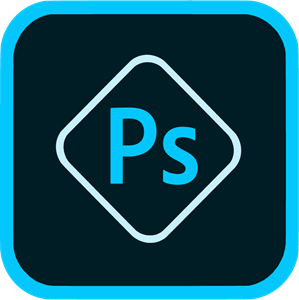
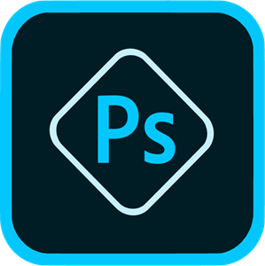

MON EXPERIENCE
AFPA MS Développpeur FULLSTACK
decembre 2023 - mars 2024
Formation en présentiel à l'AFPA de Roubaix. Introduction au PHP, Symfony 6 et MySQL.
Graphic Designer
2019 - présent
Apprentissage des outils de design graphique en autodidacte.Création de logo.
Création de posters graphiques (principalement nourriture/sport).
Lycée / Faculté
2019
Obtention d'un bac Littéraire avec mention.L1 LLCER anglais à l'université de Lille.


 
